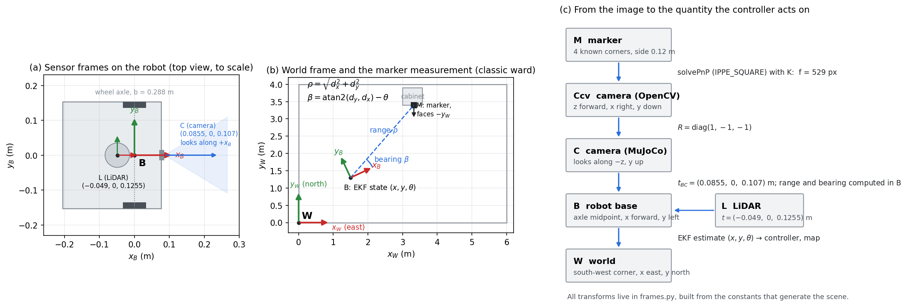

A TurtleBot3 Waffle Pi carries medication from a pharmacy point across a paediatric ward, visits four bedsides and docks at an ArUco-marked charging station. It maps the ward with its 2D LiDAR, plans around beds and trolleys, and localises with an Extended Kalman Filter that fuses wheel-encoder odometry with range and bearing to the ArUco markers.
This customised Track A project meets each requirement of the brief:
State $\mathbf{x} = [x,\ y,\ \theta]^\top$, the position and heading of the wheel-axle midpoint in the world frame. Input $\mathbf{u} = [\Delta\phi_R,\ \Delta\phi_L]^\top$, the wheel angle change per 20 ms step from the encoders. Wheel radius $r = 0.033$ m, wheel separation $b = 0.288$ m.
$$\Delta s = \tfrac{r}{2}(\Delta\phi_R + \Delta\phi_L), \qquad \Delta\theta = \tfrac{r}{b}(\Delta\phi_R - \Delta\phi_L), \qquad \varphi = \theta + \tfrac{\Delta\theta}{2}$$ $$x^+ = x + \Delta s\cos\varphi, \qquad y^+ = y + \Delta s\sin\varphi, \qquad \theta^+ = \theta + \Delta\theta$$
Process noise: wheel variance $k\lvert\Delta\phi\rvert$ per wheel, so $Q = L\,\Sigma_u L^\top$. Measurement of a marker at $(m_x, m_y)$, with $d_x, d_y$ the marker position minus the robot position: $$\mathbf{z} = \left[\sqrt{d_x^2 + d_y^2},\ \operatorname{atan2}(d_y, d_x) - \theta\right]^\top$$
[Rank tests on the linearised model; which states one marker observes, and what happens when no marker is in view.]

Marker → camera (OpenCV) → camera (MuJoCo) → robot base → world.
The camera sits 0.0855 m ahead of and 0.107 m above the axle midpoint, looking along the robot's
forward axis; the LiDAR sits 0.049 m behind it at 0.1255 m. Every transform lives in one shared
file, frames.py, built from the same constants that generate the scene, so the code and
the simulation cannot disagree.